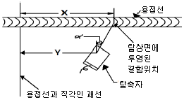
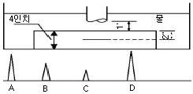
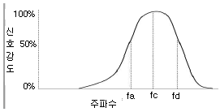

초음파비파괴검사산업기사(구) (2011-03-20 기출문제)
1과목: 초음파탐상시험원리
1. 어떤 제품을 초음파 탐상한 결과 CRT상에 높이가 낮은 지시가 아주 많이 나타나게 되었다. 이와 같은 지시의 주된 원인이 아닌 것은?
- 균열의 발생
- 결정입자의 조대화
- 균일한 접촉매질의 사용
- 미세한 입자로 된 재질 때문
(정답률: 알수없음)

2. 초음파 탐상시험시 공진법에 의한 두께 측정은 다음 중 어떤 현상을 이용하는 것이 가장 효율적인가?
- 시험체의 두께가 초음파 파장의 1/2일 때 초음파 에너지가 증가하는 방법을 이용한다.
- 시험체의 두께가 초음파 파장의 1/2일 때 초음파 에너지가 손실되는 방법을 이용한다.
- 시험체의 두께가 초음파 파장의 1/4이하일 때 초음파 에너지가 증가하는 방법을 이용한다.
- 시험체의 두께가 초음파 파장의 1/4이하일 때 초음파 에너지가 손실되는 방법을 이용한다.
(정답률: 알수없음)
3. 수침법에서 탐촉자의 근거리 음장 효과를 제거하기 위한 방안으로 옳은 것은?
- 초점 탐촉자를 사용한다.
- 탐촉자 주파수를 증가시킨다.
- 탐촉자 크기가 큰 것을 사용한다.
- 적절한 물거리(water path distance)를 사용한다.
(정답률: 알수없음)
4. 비파괴검사법 중 체적검사형태인 방사선 투과검사와 초음파탐상검사를 비교하였을 때 초음파 탐상검사의 장점이 아닌 것은?
- 탐상결과를 즉시 알 수 있으며 결함의 위치와 크기탐지가 가능하다.
- 투과능력이 크므로 수 미터(m) 정도의 두꺼운 부분도 검사가 가능하다.
- 피검체 전반에 미세한 기공이나 편석, 개재물이 있어도 탐상이 가능하다.
- 감도가 높으므로 아주 작은 균열과 같은 미세한 결함검출에 효과적이다.
(정답률: 알수없음)
5. 플라스틱 웨지(wedge)를 이용하여 경사각 탐상법으로 강의 용접부를 검사하고자 한다. 이때 1차 임계각은 얼마인가? (단, 웨지에서의 종파속도는 0.276cm/μs, 강에서의 종파속도는 0.586cm/μs, 강에서의 횡파속도는 0.323cm/μs이다.)
- 28.1°
- 34.5°
- 55.8°
- 70°
(정답률: 알수없음)
6. 직경 1.25cm, 주파수 2.25MHz인 탐촉자의 물 속에서의 분산각은 약 얼마인가? (단, 물 속에서의 초음파 속도는 1.5×105cm/s이다.)
- 2.5°
- 3.7°
- 9.5°
- 12.5°
(정답률: 알수없음)
7. 염색, 형광 침투액의 수세성 및 후유화성 침투탐상시험에서 결함 검출효과를 증대하고, 검사에 해가 되는 비관련 특성들을 제거하기 위해 사용되는 시험편은?
- A형 표준시험편
- B형 대비시험편
- 모니터 패널시험편
- 플라스틱 필름시험편
(정답률: 알수없음)
8. 다음 비파괴검사법 중 진행하고 있는 결함을 효과적으로 검출할 수 있는 시험법은?
- 자분탐상시험
- 방사선투과시험
- 침투탐상시험
- 음향방출시험
(정답률: 알수없음)
9. 육안검사에 관한 설명으로 틀린 것은?
- 육안검사는 직접 또는 간접 관찰에 의한다.
- 필요한 경우에는 시력 보조기구를 사용할 수 있다.
- 육안검사의 적용은 시험체를 사용 중에는 검사를 수행하지 못한다.
- 육안검사는 표면결함만 검출 가능하고 눈의 분해능이 약하며 가변적이다.
(정답률: 알수없음)
10. 디젤 엔진의 크랭크축을 제작하는 가공 공정 중에 고주파 열처리를 시행한 후 고주파 열처리에서 발생된 결함을 검출하고자 한다. 가장 적합한 비파괴검사법의 조합으로 옳은 것은?
- 방사선투과시험과 초음파탐상시험
- 초음파탐상시험과 자분탐상시험
- 자분탐상시험과 침투탐상시험
- 방사선투과시험과 침투탐상시험
(정답률: 알수없음)
11. 초음파탐상시 주로 표면결함의 탐상에만 쓰이는 파동은?
- 종파
- 횡파
- 표면파
- 판파
(정답률: 알수없음)
12. 누설검사법 중 가압법을 적용한 압력변화시험의 장점을 설명한 것으로 틀린 것은?
- 누설의 양을 측정할 수 있다.
- 누설의 위치 확인이 매우 쉽다.
- 시험체의 크기에 관계없이 검사가 가능하다.
- 측정 게이지로 누설여부를 즉시 알 수 있다.
(정답률: 알수없음)
13. 다음 중 비파괴시험에 사용되는 에너지원으로서 적합하지 않은 것은?
- α선
- X선
- 중성자선
- 마이크로파
(정답률: 알수없음)
14. 다음 중 비파괴검사의 적용이 가장 적절한 것은?
- 구리합금의 표면 근처에 존재하는 결함검출을 위해 자분탐상시험을 적용
- 강재 내부에 존재하는 결함의 깊이 측정을 위해 방사선투과 시험을 적용
- 강재 시험편의 두께측정을 위해 초음파탐상시험을 적용
- 다공성 재료의 표면결함 검출을 위해 침투탐상시험을 적용
(정답률: 알수없음)
15. 알루미늄의 표면 결함을 가장 잘 검출할 수 있는 비파괴검사법은?
- 방사선투과시험
- 초음파탐상시험
- 자분탐상시험
- 침투탐상시험
(정답률: 알수없음)
16. 다음 중 의료와 산업에 모두 폭넓게 이용되는 방사선 투과시험은?
- 단층촬영시험(Tomography)
- 중성자투과시험(Neutron radiography)
- 제로 방사선투과시험(Zero radiography)
- 전자 방사선투과시험(Electron radiography)
(정답률: 알수없음)
17. 다음 비파괴검사법 중 모서리 효과(Edge effect)와 표피효과(Skin effect)의 영향이 가장 큰 것은?
- 누설검사법
- 침투탐상시험법
- 와전류탐상시험법
- 방사선투과시험법
(정답률: 알수없음)
18. 와전류탐상시험에서 와전류의 침투깊이에 영향을 주는 인자와 관계가 가장 먼 것은?
- 주파수
- 전도도
- 투자율
- 전자속
(정답률: 알수없음)
19. 비파괴검사법 중 시험체의 내부와 외부의 압력차를 이용, 기체나 액체가 결함부를 통해 흘러 들어가거나 나오는 것을 감지하는 방법으로서 압력용기나 배관 등에 적용하기 적합한 시험법은?
- 누설검사
- 침투탐상검사
- 자분탐상시험
- 초음파탐상시험
(정답률: 알수없음)
20. 비파괴검사의 결함 검출능력에 대한 설명으로 옳은 것은?
- 방사선투과시험은 방사선 방향과 상관없이 결함의 검출능력이 좋다.
- 초음파탐상시험은 초음파 방향과 평행인 결함의 검출능력이 좋다.
- 자분탐상시험은 자력선 방향과 수직인 결함의 검출능력이 좋다.
- 와전류탐상시험은 와전류 방향과 수평인 결함의 검출능력이 좋다.
(정답률: 알수없음)
2과목: 초음파탐상검사
21. 다음 중 시험체의 두께 측정에 가장 널리 사용되는 초음파탐상검사방법은?
- 2탐촉자법
- 투과 탐상법
- 표면파 탐상법
- 공진법 또는 펄스반사법
(정답률: 알수없음)
22. 지름 500mm의 주강 롤(roll)을 수직탐상에 의해 결함을 평가하려고 할 때 다음 중 가장 적합한 수직탐촉자는?
- 4Z30N
- 5Q20N
- 1Q30N
- 10Z30N
(정답률: 알수없음)
23. 강재에서 형태에 따른 초음파의 속도가 빠른 것부터 느린 순으로 나열된 것은?
- 횡파＞종파＞표면파
- 종파＞횡파＞표면파
- 횡파＞표면파＞종파
- 종파＞표면파＞횡파
(정답률: 알수없음)
24. 주강품을 초음파 탐상할 때 배경 산란 잡음 지시가 커서 저면 에코와 결함지시의 식별이 어려웠다. 어떤 결함이 존재한다고 추정할 수 있는가?
- 균열
- 수축공
- 공동
- 산재된 기공
(정답률: 알수없음)
25. 모재 두께 20mm인 용접부를 45°경사각 탐촉자를 이용하여 탐상하였을 때 초음파빔 거리 50mm에서 결함이 검출되었다면 이 결함은 탐촉자 입사점으로부터 모재 표면을 따라 약 얼마의 거리(탐촉자-결함 거리)에 존재하는가?
- 14.2mm
- 28.1mm
- 35.4mm
- 70.4mm
(정답률: 알수없음)
26. 다음 중 탐상에 지장을 주는 방해 에코가 발생하는 경우가 아닌 것은?
- 펄스 반복율이 매우 높을 때
- 음향임피던스가 제로(0)인 경우
- 굴절각이 큰 경우 빔 퍼짐이 발생할 때
- 결정립이 조대한 시험체를 고감도로 검사할 때
(정답률: 알수없음)
27. 탐촉자의 구조에서 진동판의 뒷면에 채워지는 물질은 어떠한 것이 좋은가?
- 밀도가 높은 것
- 공진 효과가 좋은 것
- 강도(hardness)가 높은 것
- 댐핑(damping)이 좋은 것
(정답률: 알수없음)
28. 용접부에 방향성이 있는 결함을 그림과 같이 탐상하였다. 결함의 위치를 표시하기 위한 X값은 약 얼마인가? (단, Y는 83mm, α는 40도, 굴절각은 70도, 빔 행정거리는 60mm이다.)

- 96mm
- 99mm
- 119mm
- 126mm
(정답률: 알수없음)
29. 초음파 탐상검사에서 브라운관상의 에코 높이가 처음값에서 20%로 떨어졌다면 약 몇 dB낮아진 것인가?
- 8
- 10
- 12
- 14
(정답률: 알수없음)
30. 다음 중 강 용접부의 경사각 탐상에 관한 설명으로 옳은 것은?
- 내부 용입불량의 검출에는 V투과법이 적합하다.
- 내부 용입불량의 검출에는 탠덤탐상법이 적합하다.
- 측면 용입불량의 검출에는 탠덤탐상법이 적합하다.
- 블로홀의 검출에는 탠덤탐상법 및 V투과법이 적합하다.
(정답률: 알수없음)
31. 초음파 탐상검사시 시험체의 거리를 신속하게 측정하기 위해 탐상기의 스크린상에 있는 눈금을 무엇이라 하는가?
- Marker
- 송신pulse
- 시간 축
- Sweep line
(정답률: 알수없음)
32. 대형 단강품 등의 초음파 탐상에 있어 탐상기 화면에 임상에코가 발견되는 경우가 있다. 이러한 임상에코에 관한 설명으로 적절하지 않은 것은?
- 송신펄스 부근으로부터 연속적으로 나타난다.
- 탐촉자의 위치를 약간 이동하면 미묘하게 변화하지만 전체의 형태는 거의 변하지 않는다.
- 협대역 탐촉자를 사용하면 광대역 탐촉자를 사용하는 경우에 비하여 에코 높이가 줄어든다.
- 임상에코는 높은 주파수를 사용하는 경우 잘 발생하며 주파수를 낮춰 검사하면 에코 높이가 낮아지거나 소실된다.
(정답률: 알수없음)
33. 그림은 두께 4″의 알루미늄 시험편을 수침법으로 검사하는 것이다. 스크린에 나타난 지시치가 그림의 하단부와 같을 때 지시 A가 나타내는 것은?

- 송신 펄스
- 제 1전면 지시치
- 제 1면 불연속지시
- 제 1전면 반사지시
(정답률: 알수없음)
34. 펄스 반복율(Pulse repetiton rate)이란 무엇인가?
- 1초간 생성된 사이클의 수
- 1초간 송신펄스의 발생회수
- 1초간 생성된 공진 펄스의 수
- 1초간 수신파형을 진동수로 나눈 율
(정답률: 알수없음)
35. 강재만 측정할 수 있는 두께계로, 음속이 다르다고 생각되는 특수 재료의 두께를 측정하였다. 그 재료의 음속을 구하는데 필요한 산출식은?
- 특수 재료의 음속=강재의 음속+음속 보정계수
- 특수 재료의 음속=강재의 음속-음속 보정계수
- 특수 재료의 음속=강재의 음속×음속 보정계수
- 특수 재료의 음속=강재의 음속÷음속 보정계수
(정답률: 알수없음)
36. 다음 중 C주사 표시법(C-scan presentation)에 관한 설명으로 옳은 것은?
- 결함의 깊이 정보를 알 수 있다.
- 결함의 평면적인 분포를 파악할 수 있다.
- 초음파의 세기(또는 진폭)와 도달시간을 동시에 기록한다.
- 한 선을 따라 측정한 초음파 신호를 측정위치에 따라 도달 시간을 기록한다.
(정답률: 알수없음)
37. 다음 중 판재를 경사각 탐상법으로 검사할 경우 가장 검출하기 어려운 결함은?
- 균열(crack)
- 기공(blow hole)
- 편석(segregation)
- 라미네이션(lamination)
(정답률: 알수없음)
38. 수침법에서는 탐촉자의 위치를 탐상표면과 여러 각도가 되도록 초음파를 송신시키는데 이러한 과정을 무엇이라 하는가?
- 굴절
- 반사탐상
- 분산
- 각도변경
(정답률: 알수없음)
39. 그림과 같은 스펙트럼을 갖는 초음파 탐촉자의 중심 주파수값(fc)은 얼마인가? (단, fa=4,4MHz, fb=9.4MHz이다.)

- 4.6MHz
- 6.9MHz
- 8.6MHz
- 9.2MHz
(정답률: 알수없음)
40. 다음 중 수침법의 종류가 아닌 것은?
- 제트법
- 전몰수침법
- 국부수침법
- Wheel 탐촉자법
(정답률: 알수없음)
3과목: 초음파탐상관련규격 및 컴퓨터활용
41. 강 용접부의 초음파 탐상시험방법(KS B 0896)에 의한 원둘레이음 용접부의 초음파 탐상에 사용하는 대비 시험편의 곡률반지름은 시험체의 곡률 반지름의 몇 배로 하여야 하는가?
- ⅔배 이상 1.5배 이하
- 0.9배 이상 1.5배 이하
- ⅔배 초과 1.5배 미만
- 0.9배 초과 1.5배 미만
(정답률: 알수없음)
42. 보일러 및 압력용기에 대한 초음파 탐상검사(ASME Sec.V, Art4)에서 탐촉자를 주사할 때, 중복주사 범위를 규정하고 있다. 중복 범위를 계산하는 기준은?
- 탐촉자의 외경
- 초음파 빔의 폭
- 진동자의 크기
- 사용하는 쐐기의 크기
(정답률: 알수없음)
43. 보일러 및 압력용기에 대한 초음파 탐상검사(ASME Sec.V, Art5)에 따라 튜브류를 탐상시 사용하는 교정시험편의 교정반사체(calibration reflectors)에 관한 내용으로 옳지 않은 것은?
- 형태는 축방향 노치(notch)이다.
- 폭은 약 1.6mm이하이어야 한다.
- 길이는 약 1인치 또는 그 이하이다.
- 깊이는 약 0.1mm또는 공칭 벽 두께의 5%중 큰 쪽을 초과하여야 한다.
(정답률: 알수없음)
44. 보일러 및 압력용기에 대한 초음파 탐상검사(ASME Sec.V, Art4)에서 일반적인 경우 탐촉자의 이동속도는 얼마를 초과할 수 없도록 규정하고 있는가?
- 150mm/초(6인치/초)
- 150mm/분(6인치/분)
- 225mm/초(9인치/초)
- 225mm/분(9인치/분)
(정답률: 알수없음)
45. 보일러 및 압력용기에 대한 초음파 탐상검사(ASME Sec.V, Art4)에 따른 용접부 탐상에서 탐상에 필요한 절차서의 필수변수에 해당되지 않는 것은?
- 탐상방향
- 접촉매질의 종류
- 시험될 용접부의 형상
- 탐촉자의 형식, 주파수
(정답률: 알수없음)
46. 알루미늄 맞대기 용접부의 초음파 경사각 탐상시험방법(KS B 0897)에서 시험결과의 분류 중 1류는 흠의 길이가 몇 mm 이하인가? (단, 흠의 구분은 B종이며, 모재의 두께는 60mm이다.)
- 15mm이하
- 20mm이하
- 35mm이하
- 45mm이하
(정답률: 알수없음)
47. 초음파 펄스 반사법에 의한 두께 측정 방법(KS B ⑤36)에 따른 펄스 반사식 초음파 두께 계기의 성능 측정 방법에 관한설명으로 옳지 않은 것은?
- 측정 하한의 측정에 사용하는 시험편은 반드시 RB-T를 사용하여야 한다.
- 넓적 바닥 구멍의 거리측정에는 표준 시험편 STB-G V2, V3, V5, V8 및 STB-A2를 사용하여도 된다.
- 음속 조정은 측정기에 부속된 시험편이 없는 경우, 대비 시험편 RB-D의 1개 또는 2개의 두께를 사용하여 한다.
- 오차 측정에 사용하는 시험편은 측정 범위가 50mm를 초과하는 두께를 측정할 수 있는 장치의 경우, 범위 내의 적절한 3단계의 두께를 선택한다.
(정답률: 알수없음)
48. 건축용 강판 및 평강의 초음파 탐상시험에 따른 등급 분류와 판정기준(KS D 0040)에 따라 시험체의 두께가 100mm일 때 적용하는 탐촉자는?
- 수직 탐촉자
- 경사각 탐촉자
- 분할형 수직 탐촉자
- 공진법을 이용한 모든 탐촉자
(정답률: 알수없음)
49. 보일러 및 압력용기에 대한 초음파 탐상검사(ASME Sec.V, Art4)에서 규정하고 있는 초음파 탐상장비의 주파수 범위로 옳은 것은?
- 0.1∼0.5MHz
- 0.5∼1MHz
- 1∼5MHz
- 5∼20MHz
(정답률: 알수없음)
50. 2장의 유리판 사이에 네온(Ne)또는 아르곤(Ar)혼합가스를 채우고 전압을 가하면 가스의 전자를 충돌하여 빛이 발생하는 원리를 이용한 영상표시장치를 무엇이라고 하는가?
- 음극선관(CRT)
- 액정디스플레이(LCD)
- 플라즈마 디스플레이(PDP)
- 오실로스코프(Oscilloscope)
(정답률: 알수없음)
51. 보일러 및 압력용기에 대한 초음파 탐상검사(ASME Sec.V, Art5)에서 교정시험편은 시험할 주조품 두께의 몇 %의 두께를 갖는 것으로 제작되어야 하는가?
- ±10%
- ±15%
- ±25%
- ±30%
(정답률: 알수없음)
52. 초음파 탐촉자의 성능 측정 방법(KS B ⑤35)에 의하여 탐촉자의 표시가 “2Q10×10A45”로 되어 있을 때 “A”의 의미는?
- 형식
- 진동자 재료
- 주파수
- 진동자의 크기
(정답률: 알수없음)
53. 강 용접부의 초음파 탐상시험방법(KS B 0896)으로 탐상시 DAC회로를 사용할 때 에코 높이 구분선의 작성방법으로 옳지 않은 것은?
- A2형계 표준시험편의 Φ2×2mm의 표준구멍을 기준으로 사용한다.
- 에코 높이 구분선은 원칙적으로 실제 사용하는 탐촉자를 사용해 작성한다.
- 표준 에코 높이 구분선과 6dB씩 다른 에코 높이 구분선을 3개 이상 작성한다.
- RB-4를 사용하여 에코 높이 구분선을 작성하는 경우는 RB-4의 표준구멍을 기준으로 사용하기도 한다.
(정답률: 알수없음)
54. 후판 용접부의 경사각 탐상시 2개의 탐촉자를 전후로 배치하여 하나는 송신용, 다른 하나는 수신용으로 탐상하는 주사방법은?
- 탠덤주사
- 경사평행주사
- 지그재그주사
- 용접선상주사
(정답률: 알수없음)
55. 탄소강 및 저합금강 단강품의 초음파 탐상시험방법(KS D 0248)에 따른 탐상방식에 관한 설명으로 옳지 않은 것은?
- 흠의 평가를 흠 에코 높이로 평가하는 경우, 밑면 에코 방식으로 탐상하였다.
- 흠의 평가를 흠 에코 높이로 평가하는 경우, 시험편 방식으로 탐상하였다.
- 흠의 평가를 밑면 에코의 저하량으로 평가하는 경우, 밑면 에코방식으로 탐상하였다.
- 흠의 평가를 밑면 에코의 저하량으로 평가하는 경우, 시험편방식으로 탐상하였다.
(정답률: 알수없음)
56. 운영체제의 분류 중 제어프로그램에 속하지 않는 것은?
- Supervisor Program
- Job Control Program
- Data Management Program
- Service program
(정답률: 알수없음)
57. 정보 사회의 역기능으로 나타나는 현상이 아닌 것은?
- 부동산 가격상승
- 폭력, 자살사이트 성행
- 언론, 표현의 자유 침해
- 인터넷 중독
(정답률: 알수없음)
58. 다음 중 파일압축프로그램이 아닌 것은?
- RAR
- ZIP
- WinZip
- Norton Commander
(정답률: 알수없음)
59. 검색엔진을 이용한 정보 검색 방법으로 옳지 않은 것은?
- 다양한 검색 연산자를 이용해서 정보를 검색한다.
- 검색 내용에 해당하는 주제를 파악한다.
- 가능하다면 검색 엔진을 한 가지만 사용하는 것이 효율적이다.
- 검색할 정보에 적합한 검색 엔진을 선정한다.
(정답률: 알수없음)
60. 인터넷을 통해 멀티미디어 정보를 제공하는 온라인 잡지를 일컫는 용어로 옳은 것은?
- 웹진(Webzine)
- 옐로우페이지(Yellowpage)
- 네티즌(Netizen)
- 화이트페이지(Whitepage)
(정답률: 알수없음)
4과목: 금속재료 및 용접일반
61. 오스테나이트의 잔류량이 증가하는 원인이 아닌 것은?
- 탄소의 함유량이 높을 때
- 합금원소가 많을 때
- 담금질 온도가 낮을 때
- 결정입자가 조대할 때
(정답률: 알수없음)
62. 방진(제진)합금의 종류에 해당하지 않는 것은?
- 쌍정형
- 상자성형
- 전위형
- 복합형
(정답률: 알수없음)
63. 양백(양은)의 주요 합금원소로 옳은 것은?
- Zn+Ni+Sn
- Cu+Ni+P
- Cu+Zn+Ni
- Cu+Sn+Cr
(정답률: 알수없음)
64. 다이캐스팅용 A1합금으로 요구되는 성질을 설명한 것 중 틀린 것은?
- 유동성이 좋을 것
- 열간취성이 적을 것
- 금형에 대한 점착성이 좋을 것
- 응고수축에 대한 용탕 보급성이 좋을 것
(정답률: 알수없음)
65. 철광석의 종류와 주요 성분이 잘못 연결된 것은?
- 적철광 - FeO
- 자철광 - Fe3O4
- 능철광 - Fe2CO3
- 갈철광 - Fe2O3ㆍ3H2O
(정답률: 알수없음)
66. 격자상수가 a, 원자 반경이 r일 때, 알루미늄(Al)에서의 a와 r의 관계를 옳게 나타낸 것은?
- a=4r
- a=3r
- a=√2r
- a=4r/(√2)
(정답률: 알수없음)
67. 다음 중 수인법(water toughening)을 적용하여 인성을 부여시킨 강과 관계 깊은 것은?
- 주강
- 불변강
- 고망간강
- 고속도강
(정답률: 알수없음)
68. 가단주철의 열처리 방법 중 탈탄을 목적으로 하는 주철은?
- 흑심 가단주철
- 백심 가단주철
- 펄라이트 가단주철
- 오스테나이트 가단주철
(정답률: 알수없음)
69. 18-8형 스테인리스강의 특징이 아닌 것은?
- 비자성이다.
- 용접이 용이하다.
- 산과 알칼리에 강하다.
- 인성은 나쁘나 가공이 용이하다.
(정답률: 알수없음)
70. 금속이 일정한 온도에서 전기저항이 제로(zero)가 되는 현상을 무엇이라고 하는가?
- 석출
- 열전달
- 질량효과
- 초전도
(정답률: 알수없음)
71. 내용적 34L산소용기에 100kgf/cm2으로 들어있는 산소는 프랑스식 100번 팁을 사용하여 표준불꽃으로 용접할 경우 몇 시간을 사용할 수 있는가?
- 17시간
- 34시간
- 68시간
- 134시간
(정답률: 알수없음)
72. 점용접의 특징 설명으로 틀린 것은?
- 용접부 표면에 돌기가 발생한다.
- 재료가 절약되고 작업의 공정수가 감소한다.
- 작업 속도가 빠르고 용접변형이 비교적 적다.
- 가압력에 의하여 조직이 치밀해진다.
(정답률: 알수없음)
73. 맞대기 용접시의 횡 수축에 관한 설명으로 가장 올바른 것은?
- 판 두께가 클수록, 용착금속의 단면적이 클수록 횡 수축은 감소한다.
- 판 두께가 클수록, 용착금속의 단면적이 적을수록 횡 수축은 감소한다.
- 판 두께가 적을수록, 용착금속의 단면적이 클수록 횡 수축은 감소한다.
- 판 두께가 적을수록, 용착금속의 단면적이 적을수록 횡 수축은 감소한다.
(정답률: 알수없음)
74. 납땜 용제가 갖추어야 할 조건이 아닌 것은?
- 모재의 산화 피막과 같은 불순물을 제거하고 유동성이 좋을 것
- 청정한 금속면의 산화를 방지할 것
- 모재와 친화력이 낮을 것
- 납땜 후 슬래그 제거가 용이할 것
(정답률: 알수없음)
75. 레이저 빔 절단에서의 절단종류가 아닌 것은?
- 레이저-연소절단
- 레이저-화학절단
- 레이저-용융절단
- 레이저-승화절단
(정답률: 알수없음)
76. 직류 용접기를 교류 용접기와 비교한 설명 중 틀린 것은?
- 아크가 교류일 때보다 불안정하다.
- 비피복 용접봉의 사용이 가능하다.
- 교류에 비해 가격이 비싸나 역율이 양호하다.
- 직류는 극성 변화가 가능하며 전격의 위험이 적다.
(정답률: 알수없음)
77. 토치 팁 대신 안지름 3.2∼6mm, 길이 1.5∼3mm정도의 긴 강관에 산소를 공급하여 그 강관이 산화 연소할 때의 반응열로 금속을 절단하는 절단법은?
- 분말 절단
- 산소창 절단
- 산소아크 절단
- 워터제트 절단
(정답률: 알수없음)
78. 강(鋼)중의 황(S)이 층상으로 존재하여 생기는 균열은?
- 가로 균열
- 세로 균열
- 병배 균열
- 설퍼 균열
(정답률: 알수없음)
79. 용접부 시험법의 분류 중 야금학적 시험에 해당되지 않는 것은?
- 부식시험
- 현미경조직시험
- 파면시험
- 설퍼프린트시험
(정답률: 알수없음)
80. 용접부의 연성과 결함의 유무를 조사하기 위하여 실시하는 시험법은?
- 피스코시험
- 방사선 투과시험
- 리하이형시험
- 굽힘시험
(정답률: 알수없음)